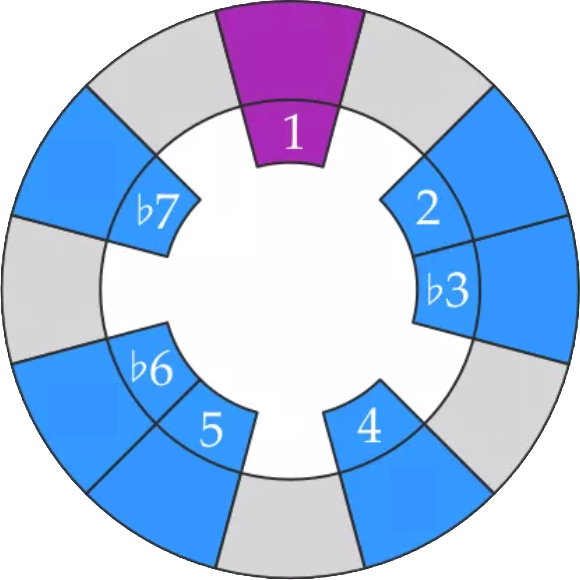

A
A#
B
C
C#
D
D#
E
F
F#
G
G#
Aeolian Minor Scale
Altered
Blues
Dorian
Harmonic Major
Harmonic Minor
Hexatonic
Locrian
Lydian Dominant
Lydian
Major Pentatonic
Major Scale
Melodic Minor
Minor Pentatonic
Mixolydian
Octatonic
Phrygian Dominant
Phrygian
Whole Tone
 